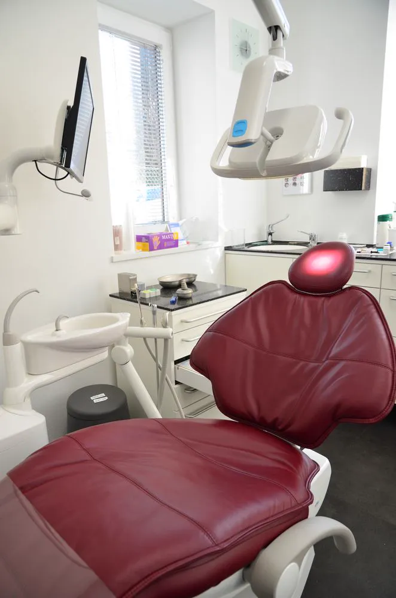
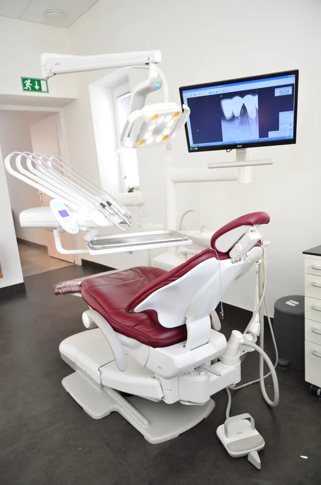
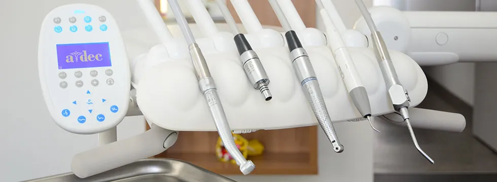
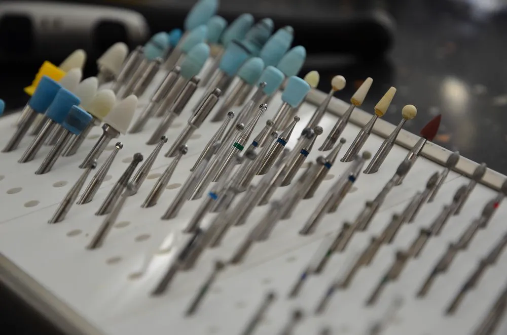
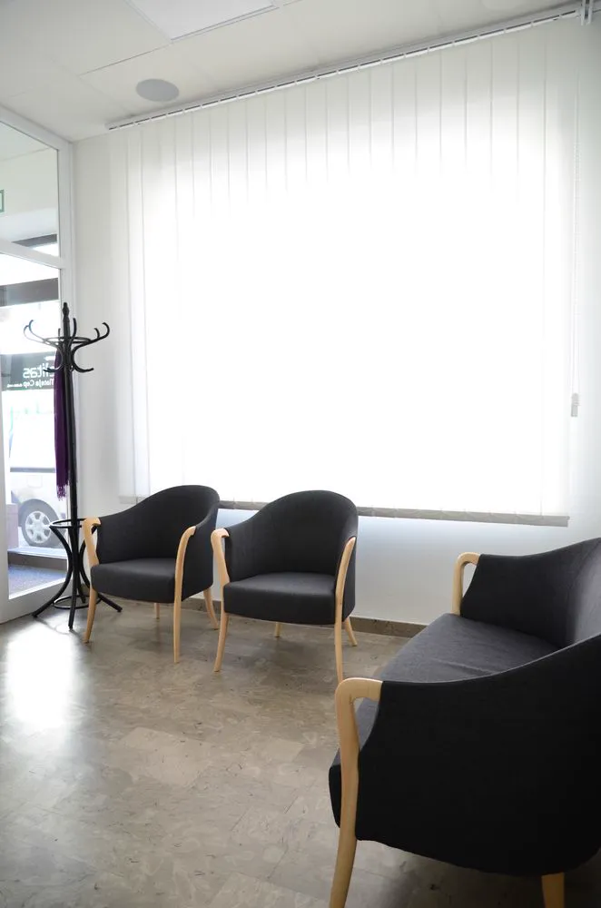
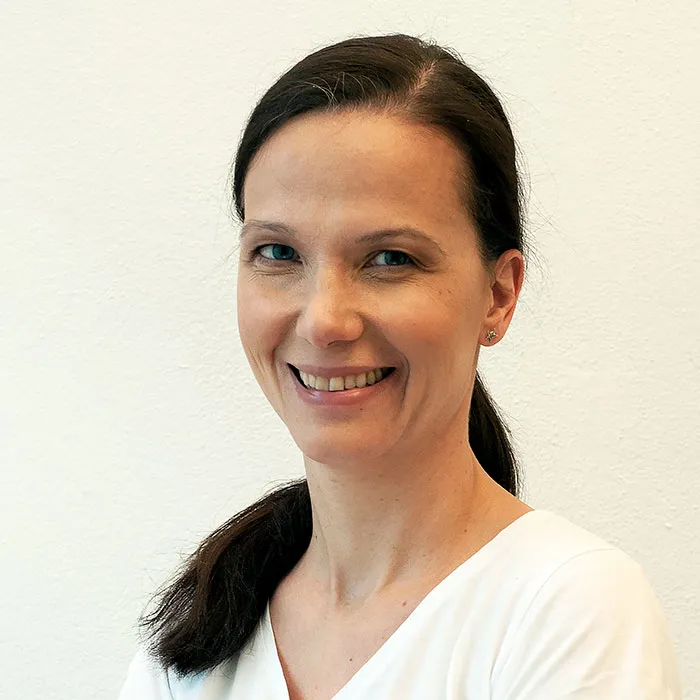
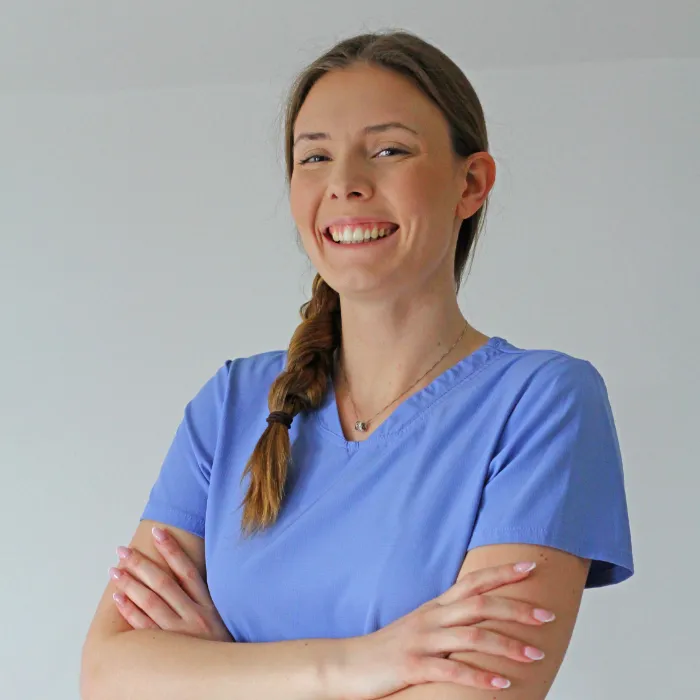

Zasebna zobna ambulanta · Cankarjeva ulica 6, Postojna
Zobna ambulanta Fidelitas
Naša ambulanta želi s sodobnimi metodami, tehnikami in aparaturami pacientu omogočiti celotno zobozdravstveno oskrbo v najkrajšem realnem času.
Naša ambulanta želi s sodobnimi metodami, tehnikami in aparaturami pacientu omogočiti celotno zobozdravstveno oskrbo v najkrajšem realnem času.

V naši praksi uporabljamo sodobno zobozdravstveno opremo.
Na vašo željo oziroma kadar sodimo, da je to potrebno, vam ponudimo lokalno anestezijo.
Natančnejšo sliko posameznega zoba in obzobnih tkiv naredimo z aparatom RVG (radioviziografijo). To je tehnika slikanja zob z računalniško podprtim rentgenskim aparatom. Slika je takoj na zaslonu in jo shranimo v pomnilnik računalnika.
V sodelovanju s specialistom vam pri nas vsadimo tudi implantate.
Vse, kar uporabimo pri delu, je ali sterilizirano ali se po prvi uporabi odvrže.





Po končanem študiju dentalne medicine na Medicinski fakulteti v Ljubljani sem leta 2005 opravila strokovni izpit, slabo leto kasneje pa sem začela delati v zobozdravstveni ambulanti Fidelitas. Svoje znanje redno nadgrajujem na različnih strokovnih srečanjih.

| Ponedeljek | od 7.30 do 12.30 |
|---|---|
| Torek | od 12.00 do 19.15 |
| Sreda | od 7.00 do 11.00 |
| Četrtek | od 7.30 do 19.15 malica od 12.30 do 13.00 |
| Petek | od 7.30 do 12.30 |
Kot je objavljen na fidelitas.si (preverjeno 21. 11. 2026). Pred obiskom preverite morebitne spremembe.
Čakalne dobe za ZZZS konzervativo znašajo 2 meseca, za protetiko pa 3 mesece. Število evidentiranih zavarovanih oseb na dan 27. 7. 2025 je 1631.
Pooblaščena oseba za vodenje čakalnega seznama je Mateja Cep dr.dent.med., dosegljiva v času ordinacijskih ur ambulante.
Podatki, kot so objavljeni na fidelitas.si (preverjeno 21. 11. 2026).
Naročite se lahko neposredno v ambulanti v ordinacijskem času ali pa nas pokličete, oziroma nam pišete na e-naslov.